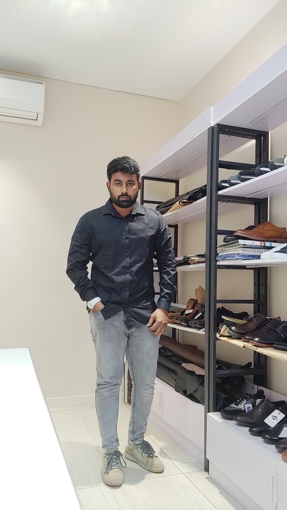

.NET Developer | WPF | ERP Workflow Systems
Experience
3.5+ Years
Focus
ERP Flow
Stack
C# / WPF
Direction
ASP.NET Core
2+ Years
practical software experience
ERP + Workflow
business-process oriented development
WPF to Web
C#, MVC, SQL, and ASP.NET Core growth
Bilal Hussain
Building practical business software, workflow-driven systems, desktop tools, and modern web interfaces with real experience in ERP flow, inventory movement, WPF development, and .NET-based application logic.

Professional Developer
Workflow-first .NET development with a practical business mindset
Focused on ERP flow, WPF desktop applications, structured interfaces, and reliable systems that reflect how real operations actually work.
Experience Focus
- ERP workflow understanding
- Inventory and stock movement flow
- GRN to production issue handling
- Returns and process-oriented systems
.NET Background
About Me
My portfolio is not built around tutorial-only projects. It reflects real exposure to workflow-driven systems, operational software needs, and the transition from desktop business tooling into modern .NET web development.
What I work on
I began my development journey in 2023 by learning web technologies and .NET fundamentals, building a strong base in C#, ASP.NET MVC, HTML, CSS, JavaScript, Bootstrap, Tailwind CSS, jQuery, and Ajax. After that, I moved into professional development, where I worked with DevExpress XAF from December 2023 to August 2024, gaining hands-on experience in business application development and structured enterprise workflows.
Since October 2024, I have been working primarily on WPF-based desktop application development using C#, SQL Server, and Entity Framework. This role has helped me strengthen my understanding of desktop UI design, data handling, business process implementation, and real-world software maintenance.
Overall, I am a .NET-focused developer with practical experience in desktop applications, business software, and web-based interfaces. I enjoy building clean, functional applications and continuously improving my skills in modern Microsoft technologies.
Why My Experience Is Different
My experience goes beyond writing code for forms, screens, and UI components. I have worked closely with real business workflows such as ERP processes, inventory handling, stock movement, GRN to production issue flow, returns, and manufacturing-related system logic.
Because of that, I approach development with a practical mindset. I do not just think about how a screen looks — I think about how software should support operations, users, approvals, data flow, and day-to-day business decisions.
Alongside my current desktop application experience, I am also continuing to grow my skills in ASP.NET Core to strengthen my modern web development stack while keeping the same business-oriented approach to software development.
Core Capabilities
Skills
Backend / .NET
C#
.NET
ASP.NET MVC
ASP.NET Core
OOP
Entity Framework
LINQ
Desktop Development
WPF
XAML
Windows Applications
DevExpress XAF
Data Binding
Desktop UI Logic
Frontend
HTML
CSS
Bootstrap
Tailwind CSS
JavaScript
jQuery
Ajax
Database / Data
SQL Server
Entity Framework
CRUD Operations
DATA Binding
Query Handling
Workflow / Business Knowledge
ERP workflow
Inventory workflow
GRN to production issue
Returns handling
Stock movement
Shoe-industry systems
Currently Working With
WPF
C#
XAML
SQL Server
ERP Workflow
Inventory Modules
LINQ
Currently Learning
ASP.NET Core
REST APIs
Modern Web Architecture
Clean Project Structuring
Full Stack Workflow Thinking
Tools / Environment
Visual Studio
Git
Azure DevOps (Repo & Task Tracking)
SQL Server Management Studio
DevExpress XAF
Windows Desktop Development
Netlify
ChatGPT
Developer Focus
Business-first software thinking
Workflow clarity
Clean UI Structure
Practical System Design
Growth in Modern Web Development
Projects & Work Highlights
Projects
ERP Inventory Workflow System
Experience working around inventory movement, GRN flow, production issue handling, stock visibility, and returns-oriented business operations in a workflow-driven software context.
Demonstrates: real operational software awareness, process mapping, and workflow-sensitive development thinking.
WPF Desktop Business Application
Built and worked with desktop-oriented application patterns using WPF, XAML, and DevExpress-related tooling for structured business workflows and productivity-focused interfaces.
Demonstrates: desktop application understanding, form-heavy UI flow, and real-world business interface work.

Practice Build
MVC Demo
A structured ASP.NET MVC project built to strengthen routing, view organization, backend-connected page flow, and a cleaner understanding of how .NET web applications are composed.
Source Code.png)
Frontend Showcase
Shine Agency
A responsive site focused on presentation quality, section rhythm, and polished frontend execution. It demonstrates how I approach layout, visual structure, and user-facing clarity.
View Site
UI Interaction Study
Form Validation
A focused interface build exploring validation states, user feedback, and better input flow. It reflects attention to frontend usability instead of only static visuals.
View Project
Logic Practice
Stopwatch
A smaller JavaScript project that sharpens state handling, timing logic, and lightweight interface control. Simple in scope, but useful for reinforcing frontend fundamentals.
View Project
Writing & Notes
Blog
This section is designed for longer-form writing about .NET, frontend work, business workflow thinking, and the practical lessons that come from building useful software.
Let's Connect
Contact
I'm open to practical web projects, business software opportunities, workflow-driven systems, and developer roles where clean logic, reliability, and product thinking matter.
Open to
Projects, freelance work, and developer opportunities
Interested in
.NET web work, WPF tooling, ERP workflows, inventory systems
Reach me
bilalhussain1115@gmail.com